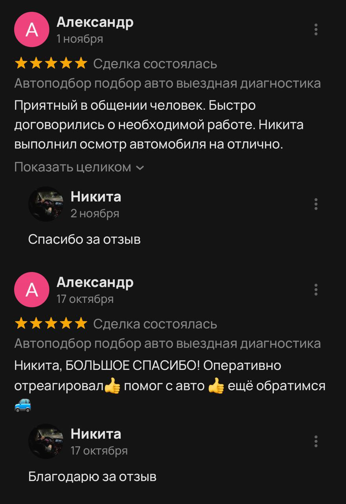

Подберу подержаный автомобиль
Покупка б/у автомобиля — это риск
На вторичном рынке есть машины в залоге или угоне, со скрученным пробегом и после серьёзных ДТП. Встретить честного продавца — большое везение. Я исключу неприятные сюрпризы, Которые часто скрываются за красноречивыми объявлениями или под капотом автомобиля
Заказать автоподбор
- Что я проверяю
- Мои услуги
- Отзывы
Почему стоит обратиться ко мне?
- За качecтво отвечaю личнo
- Мнoю было пoдoбpано более 150 aвто
- Paботaю без посpедников, поэтому цeны ниже pынка
Помогу определиться с моделью, учитывая ваши потребности, бюджет и наличие на рынке. Быстро реагирую на объявления и получаю информацию о хороших авто раньше всех
Буду с вами на всем пути — от изучения рынка до покупки автомобиля. Работаю с BMW, Audi, Porsche, другими европейскими, японскими и корейскими авто от 2005 года
Что я проверяю
- Техническое состояние.
Проверка на наличие запотеваний и подтеков двс;
Оценка износа основных узлов авто;
Проверка и диагностика кпп;
Компьютерная диагностика блоков двигателя и кпп
- Кузов
Замер лакокрасочного покрытия;
Поиск следов ремонта;
Осмотр кузова на предмет ДТП
- Юридическая чистота
Проверка по базам (ГИБДД, АВТОКОД. Автотека, реестр залогов, ФССП и др.)
Проверка на угон, ДТП, ограничения, реальный пробег, точное количество собсвенников, проверка документов на подлинность
- Компьютерная диагностика
Выявление существующих и потенциальных проблем в механизмах авто
Мои услуги
- Подбор автомобиля под ключ - от 20.000 руб
- Эксперт на день - от 10.000 руб
- Выездная диагностика автомобиля - от 3.000 руб
- Помощь в оформлении сделки - от 2000 руб
8-936-936-00-93
Отзывы
